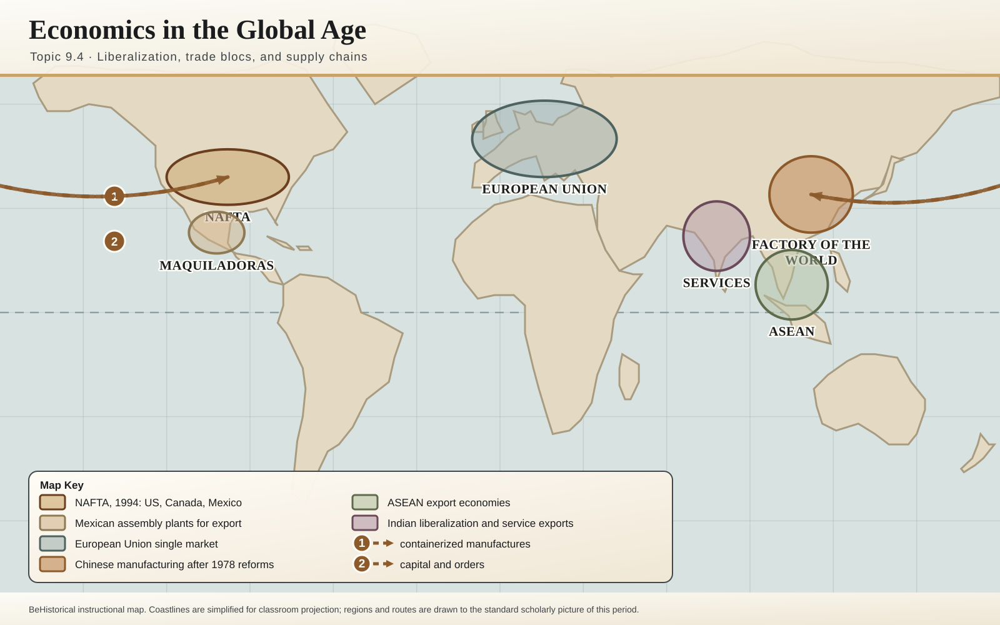

Globalization
Technology, economics, culture, environmental change, and global challenges from c. 1900 to the present.

Advances in Technology and Exchange
New communications, transportation, and technologies that intensified global connection.

Technological Advances and Limitations
Innovation, access, inequality, and the uneven effects of modern technology.

Environmental Effects of Globalization
Industrial growth, resource use, pollution, and climate challenges.

Economics in the Global Age
Free trade, multinational corporations, global labor, and economic interdependence.

Calls for Reform and Responses
Movements responding to inequality, human rights issues, and global economic change.

Globalized Culture
Mass media, consumer culture, cultural exchange, and cultural resistance.

Resistance to Globalization
Local, national, and transnational resistance to global economic and cultural forces.

Institutions Developing in a Globalized World
International organizations, NGOs, and new forms of global cooperation.

Continuity and Change in a Globalized World
Analyze continuities and changes in global connections from 1900 to the present.